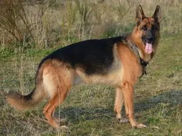
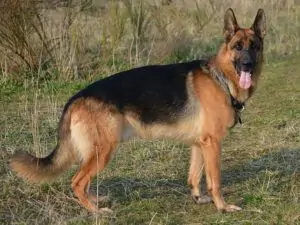

10 most popular dogs breeds of 2023
 omattah martins

omattah martins

If you are cutious to know what is the most popular breed of dog is, you are in the right place!The statistics fir registration of purebred pupies with the Ametican kennel club gor last year has just been released. This gives us a good indication of what the most popular breed will been this year. Lets find out which will take the top spot and which has started to fall out of favor.
The most popular breed of Dogs
- labrador retriever
The ever-popularlabrador retrieverholds onto the top spot for the 30th year! Thats an amazing achievement, though not a surprising one for a lovable and enthusiastic breed like the labrador. aThis breed has plenty of Energy,loves to spend times with their families, and has an incredibly kind nature. Labrador retriever are extremely intelligent and love the challenge of training sessions. They need an active home where they have plenty opportunities to play and run off steam
| life expectancy | Height | Weight |
|---|---|---|
| 10-12 years | 21.5-24.5 inches | 55-80 pounds |
- French Bulldog
The French bulldog has gained popularity in recent years and jumped to two places higher than last year its unlikely that they'll take overthe labrador, but they are the most popular small breed by quite a margin. French bulldogs have an adorable personality combine with low to moderate exercise requirements. They are great choice for urban living. French bulldogs are expensive,though, and have a few health issues that owners should read up on before taking up the plunge.
| Life expectancy | Height | Weight |
|---|---|---|
| 10-12 years | 11-13 inches | up to 28 pounds |
- German Shepherd
The German shepherd has slipped down the ranking two place since 2019, but they have a strong following of loyal fans nevertheless.This exceptional work ethic and is prized as a working breed. They also make exceptional family pets although they can be quite disinterested in strangers and visitors whom they don't know well. This active breed needs plenty of exerciseand opportunity for mental stimulation
| Life expectancy | Height | weight |
|---|---|---|
| 12-14 years | 22-26 inches | 50-90 pounds |
- Golden Retriever
The Golden Retriever consistently ranks as one of the most popular dog breed and for good reasons! These adorable dogs are affectionate and loyal but can also be focused and serious when working. They have a cheerful disposition and are always happy and eager to please their owners. That happy-go-lucky exterior makes a fierce intelligence and a strong work ethic, which makes them
| Life expectancy | Height | Weight |
|---|---|---|
| 12-14 years | 21.5-24 inches | 55_75 pounds |
- Bull Dog

The chunky bull dog has a look all of their own , with their muscular,low slung bodies and cheerful, broad.Despite their tough-looking exterior, this breed loves nothing than to try to snuggle in their owners' lap! They can easily put on weight,so they need a moderate amount of exercise. cares needs to be taken during the warmer months, because their short muzzle means they can easily overheat. Bull dogs are not strong swimmers and should never be left unsupervised around water.
| Life expectancy | Height | Weight |
|---|---|---|
| 8-10 years | 14-15 inches | 40-50 pounds |
- poodle
The poodle can be found in three different sizes: standard, Miniature, and Toys.The listed sizes and weight are for the standard variety. All poodle are incredibly smart, athletic and trainable. They once had a reputation as a delicate city dog, but nothing could be farther from the truth. If you are looking for an active companion for outdoor adventures, they are a great choice. Also the breed has resulted in many popular mixed breeds, like the labradoodle, cockapoo, and Goldendoodle.
| Life expectancy | Height | Weight |
|---|---|---|
| 10-18 years | 15 inches and above | 40-70 pounds |
- beagle
The beagle is incredibly loyal,but they also have an independent streak that you wilm see whenever they catch a scent and are very interesting. This is a cheerful and happy breed. They adore company, which give their history as a pack dog, is not surprising. Beagles are an happy breed, but they shouldn't be let off-leash pr they may run off. Their love of following scent is so strong, they would frequently try to jump fences or burrow underneath them to follow that trial.
| Life expectancy | Height | Weight |
|---|---|---|
| 10-15 years | 13-15 inches | 20-30 pounds |
- Rottweiler
The muscular and strong rottweiler are incredibly gentle and loyal around their families, but thwy dont sharethis same part of their character with strangers. They can be little aloof around people they don't know, but they won't hold back from letting their loved ones know how much they adore rottweilers have plenty of energy,which combine with their intelligence, means they need a home where they need a they get plenty of mental and physical exercise on a daily basis
| Life expectancy | Height | Weight |
|---|---|---|
| 9-10 years | 22-27 inches | 80-135 pounds |
- German shorthaired pointer
The noble and enthusiatic German shorthaired pointer(GSP) lovesany activity that allows them to spend time in the great outdoors. They are an enthusiastic and noble breed and are equally and at gundog trials as they on all- day hike. The intelligence of th GSP makes them a rewarding training partners and whatever they engage in.whatever they do they will do it comittedly and with enthusiasm.
| Life expectancy | Height | Weight |
|---|---|---|
| 10-12 years | 21-25 inches | 45-70 pounds |
- Dachshund
The instantly recognizableDashshund comes in teo sizes and three coat types. Whatever size or coat they have,you will never mistake them for other breeds! This breed might be small, but they love to keep an active eye on whatever is happening in their neighborhood. sometimes they can be a bit too enthusiastic. Given their history as a breed designed to take on fierce prey like badgers, this isn't too surprising. These little dogs are independent, intelligent,and incredibly endearing.
| Life expectancy | Height | Weight |
|---|---|---|
| 12-16 years | 5-9 inches | 11-32 pounds